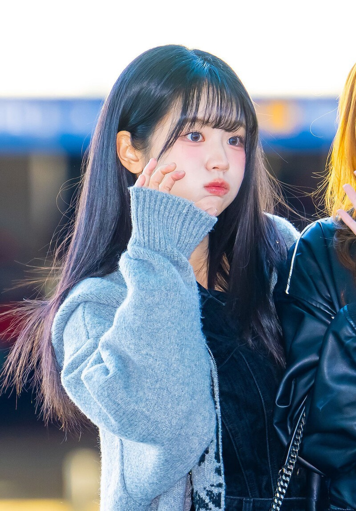
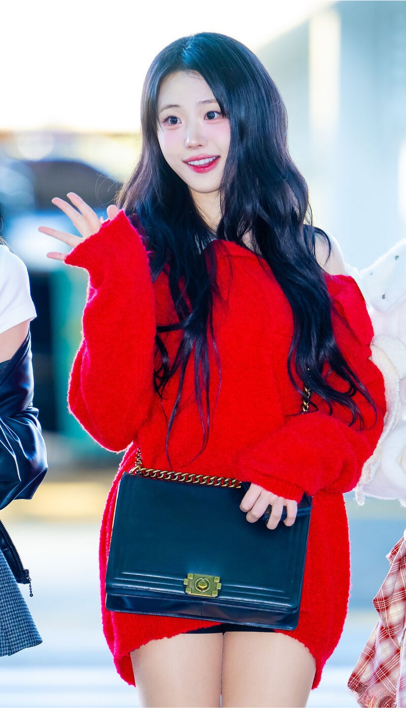
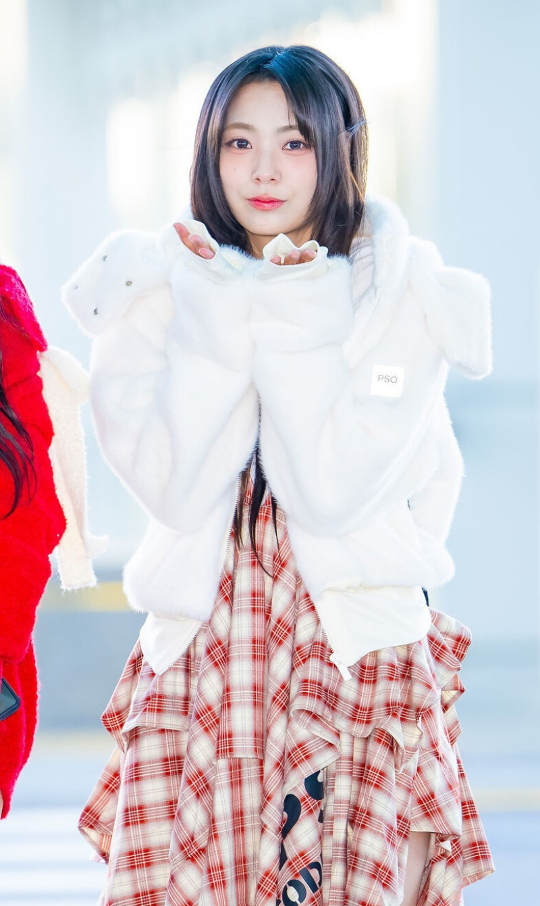

QWER is a four-member band named after the Q, W, E, and R keys on a keyboard—best known in League of Legends for activating champion abilities. Each member represents one of the four letters, forming the band name Q-W-E-R. Formed under 3Y Corporation and Tamago Production, they debuted on October 18, 2023 with their first single album Harmony from Discord. The name is pronounced individually as Q–W–E–R, not “kwer.”
The group originally gained fame as online creators before transitioning into music. Their blend of pop-rock energy, influencer culture, and strong digital presence helped them quickly build a dedicated fanbase.
QWER was formed in early 2023 through a collaboration between 3Y Corporation and Tamago Production, bringing together members who were already well-known online for their personalities, gaming backgrounds, and content creation.
The group officially debuted on October 18, 2023 with the single album Harmony from Discord, gaining attention for their concept that blends gaming culture with band aesthetics. Their debut showcased a pop-rock sound, quickly earning praise from both music and gaming communities.
Throughout 2024, QWER continued expanding their presence through live performances, collaborations, and consistent social media engagement. Their relatable personalities and energetic stage presence helped solidify their growing popularity.
As of today, QWER continues to develop their identity as a modern band bridging online culture and mainstream music, drawing fans from both the K-band and digital entertainment scenes.

Stage Name: Chodan
Real Name: Hong Ji-hye (홍지혜)
Birthday: November 1, 1998
Position: Leader, Drummer, Sub-Vocalist
Nationality: Korean
Height: 165 cm
Chodan is QWER's leader, drummer, and sub-vocalist, known for her athletic background in boxing, taekwondo, and table tennis. She was the first to join QWER She loves football, metal music, and gaming, and also frequently streamed League of Legends on Twitch before joining the band. She was a drum major at Sungshin Women's University. Becoming part of a band was her long-time dream, and she hopes to perform concerts, busk, and eventually chart on Billboard.
Stage Name: Magenta
Real Name: Lee Ah-hee (이아희)
Birthday: June 2, 1997
Position: Bassist
Nationality: Korean
Height: 162 cm
Magenta is QWER's bassist and the second member to join, known for her energetic personality and career as a Twitch streamer. She loves J-pop, J-rock, anime, and chose “Magenta” as her stage name because it's her favorite color. Though she started bass late, she trains hard—often sleeping only a few hours—and was even coached by musicians from BOL4. As the oldest member, she naturally takes care of the others and hopes to perform concerts, try new concepts, and collaborate with artists like YOASOBI.

Stage Name: Hina
Real Name: Jang Na-young (장나영)
Birthday: January 30, 2001
Position: Guitarist, Keyboardist, Maknae
Nationality: Korean
Height: 172.6 cm
Hina is QWER's guitarist, keyboardist, and maknae, known for her viral popularity on TikTok and her resemblance to IVE's Wonyoung. She works the hardest in practice, often staying up late and keeping unusual sleep hours, and describes herself as an "otaku" who loves games and Japanese culture. Despite being the youngest, she sees QWER as her family and aims to become a skilled guitarist. She hopes to perform live, collaborate with aespa—especially her bias Winter—and always gives her best for both the band and her fans.

Stage Name: Siyeon
Real Name: Lee Si-yeon (이시연)
Birthday: May 16, 2000
Position: Main Vocalist, Guitarist
Nationality: Korean
Height: 160 cm
Siyeon is QWER's main vocalist and guitarist, and the fourth member to join. Before QWER, she made history as the first Korean to debut in NMB48, gaining valuable idol and performance experience through busking, stages, and fan activities. She loves nature-inspired colors, donuts, and music, and is easily recognized by her charming mole. Siyeon values communication with fans above all and aims to appear on Korean music shows, meet her Japanese fans again, and continue growing as an artist with QWER.